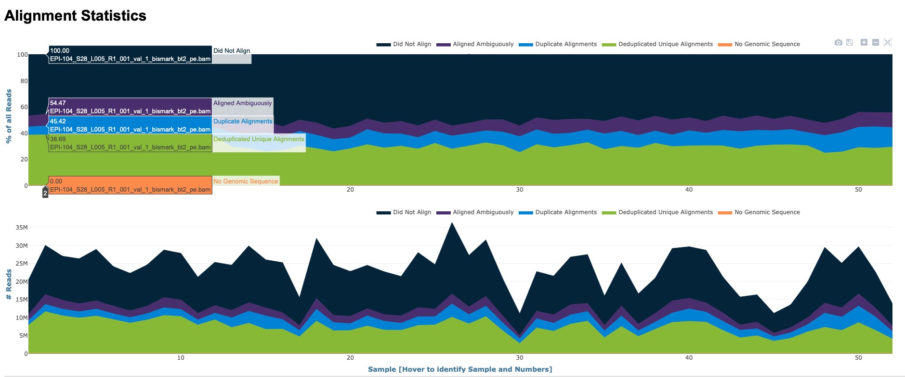

DNA Methylation Assessment
Introduction
Background
Thanks to advances in sample preparation and sequencing methods, there is an influx of research examining epigenomics in non-model systems. Broadly, epigenetics can be defined as changes to gene expression that do not arise from changes in the DNA sequence. DNA methylation, or addition of a methyl (CH3) group to a cytosine base adjacent to a guanine (CpG) is one of the more commonly studies epigenetic mechanisms, partly because of its environmental sensitivity and potential role in phenotypic plasticity. For a good review of epigenetic mechanisms including DNA methylation in marine organisms see Eirin-Lopez and Putnam (2019).
The purpose of this tutorial is to provide an example of aligning bisulfite-treated and enzymatically converted DNA sequence data to an existing genome, and discuss needs for potential downstream applications. The principle behind creating bisulfite-treated DNA libraries is that when cytosines are not methylated, then they will be converted to uracil, which ultimately result in thymine nucleotides in the sequence data. Wanamaker et al. (2022) offers a comparison of three methods for quantifying DNA methylation at single base-pair resolution using whole genome bisulfite sequencing (WGBS), reduced representation bisulfite sequencing (RRBS), and methyl-CpG binding domain bisulfite sequencing (MBDBS). When aligning bisulfite-converted data to a reference genome the percent methylation at a given CpG loci is determined by examining the ratio of thymines to cytosines. For example if there is a given cytosine adjacent to a guanine (ie CpG locus) with 30% of the reads containing thymine, one would consider this cytosine loci (CpG) to be 70% methylated. Since bisulfite treatment can damage DNA, newer library preparation and sequencing methods (ex. NEBNext® Enzymatic Methyl-seq Kit; EM-seq are starting to gain popularity. As EM-Seq produces loci-level data, alignment of EM-Seq data is similar to WGBS. Also, technologies like Nanopore and PacBio sequencing can directly detect DNA methylation without bisulfite conversion. See Dimond, Nguyen, and Roberts (2021) as example of using Nanopore sequencing. As DNA passes through a nanopore or is sequenced by single-molecule real-time (SMRT) technology, changes in electrical current or fluorescence patterns can indicate the presence of methylated bases.
Experimental Considerations
Sample Size
Sample size is a critical factor when conducting DNA methylation analysis, particularly because of the significant variation in methylation patterns both between individuals and across different tissues. This variation, which is not yet fully understood, can significantly impact the outcomes and interpretations of methylation studies.
When selecting samples for DNA methylation analysis, the key principle is that larger sample sizes generally provide more reliable and generalizable results. A larger number of samples allows for a more accurate representation of the population, accounting for individual and tissue-level differences. This is essential for identifying true biological patterns rather than artifacts of small, non-representative samples.
However, the practicality of obtaining a large number of samples must be balanced with resource constraints. In this context, a sample size of around eight can be considered a decent starting point. This number is often sufficient to begin observing trends and patterns in methylation across individuals and tissues, providing a foundational understanding which can be built upon with further research.
It’s crucial to remember that while more samples can enhance the reliability of the results, the quality of the samples and the robustness of the methylation analysis techniques are equally important. Therefore, researchers must strive for a balance between quantity and quality in their sample selection to ensure meaningful and accurate insights into DNA methylation.
Sequencing Depth
Bisulfite Conversion Efficiency
Bisulfite Conversion Efficiency is important to assess. One common step during library preparation us spiking library with Lambda phage DNA. Lambda phage DNA lacks cytosine methylation, making it an ideal control for bisulfite treatment. Here’s how it works and why it’s useful:
Background on Lambda Phage DNA: Lambda phage DNA is a widely used control in bisulfite sequencing because it is naturally unmethylated. By including this DNA in your sample, you create a known unmethylated reference.
Preparation and Spiking: You prepare the lambda phage DNA and spike it into your DNA samples before bisulfite treatment. The proportion of lambda DNA added should be enough to be detected post-sequencing, but not so much that it overwhelms the sample. A typical proportion might be around 0.1% to 1% of the total DNA.
Bisulfite Treatment and Sequencing: After spiking, you proceed with bisulfite treatment and sequencing of the entire sample, which now includes your genomic DNA of interest and the spiked lambda DNA.
Assessing Conversion Efficiency: Once sequencing is complete, you analyze the lambda phage DNA sequences. Since this DNA is unmethylated, all cytosines should be converted to thymines after bisulfite treatment and subsequent PCR. By calculating the percentage of cytosines that were successfully converted to thymines in the lambda DNA, you can determine the bisulfite conversion efficiency. An efficient conversion typically results in over 99% of cytosines being converted.
Tutorial Details
For a good review of epigenetic mechanisms including DNA methylation in marine organisms see Eirin-Lopez and Putnam (2019). Wanamaker et al. (2022) offers a comparison of three methods for quantifying DNA methylation at single base-pair resolution using whole genome bisulfite sequencing (WGBS), reduced representation bisulfite sequencing (RRBS), and methyl-CpG binding domain bisulfite sequencing (MBDBS). The tutorial below is based on WGBS, though the general workflow would be consistent.
The tutorial will cover the following:
- Sequence quality assessment
- Read alignment
- Methylation quantification
- File conversions
- Potential downstream applications. Although this tutorial will not provide code for downstream applications such as differential methylation analysis, it will link to other open-access resources and examples.
The tutorial below is based on WGBS from a species of marine intertebrate (Montipora capitata coral) examined in Wanamaker et al. (2022), and all raw data can be accessed under NCBI Bioproject PRJNA691891 if you would like to follow the tutorial with this dataset. The general workflow would be consistent for other library preparation and sequencing methods that produce loci-level data. The tutorial indicates places where special analytical consideration should be given to other data types. Given the size of the data files and the computational resources necessary this is not developed to be actionable and reproducible. For context this process outlined below took weeks on a university HPC system.
Sequence Quality
Following trimming one would expect to see FastQC per base sequencing content similar to the plot shown below. This particular data set was trimmed with the following parameters:
/gscratch/srlab/programs/TrimGalore-0.4.5/trim_galore \
--output_dir /gscratch/scrubbed/strigg/analyses/20200311/WGBS_MBD \
--paired \
--fastqc_args \
--outdir /gscratch/scrubbed/strigg/analyses/20200311/WGBS_MBD/FASTQC \
--threads 28 \
--illumina \
--clip_R1 10 \
--clip_R2 10 \
--three_prime_clip_R1 10 \
--three_prime_clip_R2 10 \
--path_to_cutadapt /gscratch/srlab/programs/miniconda3/bin/cutadapt \
/gscratch/scrubbed/sr320/froger-raw/00_fastq/Meth17_R1_001.fastq.gz \For WGBS and MBDBS data, it is general practice to hard-trim 10 bp from the beginning and end of each read. RRBS data often needs different trimming specifications see Manual for details
Read Alignment
Software Considerations
The software used as part of this tutorial is Bismark Bisulfite Mapper Krueger and Andrews (2011), which is one of the more widely-used softwares to align methylation data to a reference genome. Another commonly-used options include bwa-meth Pedersen et al. (2014) and BSMAP Xi and Li (2009) (see Nunn et al. (2021) and (Gong et al. 2022) for comparisons of these software for plant and mammal species, respectively). As with any software it is best to be famililar with the User Manual.
Within Bismark, the tutorial uses Bowtie 2 Langmead and Salzberg (2012) as the alignment software. Although the Bismark user manual covers the necessary Bowtie 2 parameters, it may be useful to refer to the Bowtie 2 manual.
The content below will provided with the assumption that the reader has read the manual and is meant to serve as guidance based on experience working with marine invertebrates.
Genome Preparation
The first step in the process in preparing the reference genome by performing an in silico bisulfite conversion to allow Bowtie alignments. Example code:
# Directories and programs
bismark_dir="/programs/Bismark-0.21.0"
bowtie2_dir="/programs/bowtie2-2.3.4.1-linux-x86_64/"
genome_folder="/where/the/fastafile/lives/"
${bismark_dir}/bismark_genome_preparation \
--verbose \
--parallel 28 \
--path_to_aligner ${bowtie2_dir} \
${genome_folder}Bismark Genome Preparation Command:
${bismark_dir}/bismark_genome_preparation: This is the command to run the genome preparation part of Bismark. The${bismark_dir}variable is expanded to the path where Bismark is installed, so the script knows where to find thebismark_genome_preparationprogram.--verbose: This flag makes the program output more detailed information about what it is doing, which is helpful for debugging or understanding the process.--parallel 28: This option tells Bismark to use 28 threads in parallel to speed up the process. You can adjust this based on your computing power.--path_to_aligner ${bowtie2_dir}: This specifies the path to the aligner (Bowtie2) that Bismark will use. The${bowtie2_dir}variable is expanded to the path where Bowtie2 is installed.${genome_folder}: Finally, this specifies the location of the genome files. The script uses the${genome_folder}variable, which holds the path to these files.
Bismark will create two individual folders within this directory, one for a C->T converted genome and the other one for the G->A converted genome. After creating C->T and G->A versions of the genome they will be indexed in parallel usingthe indexer. Bismark will create the following subdirectories as outputs.
./Bisulfite_Genome
./Bisulfite_Genome/GA_conversion
./Bisulfite_Genome/CT_conversionThis preparation step only needs to happen once for a given genome.
Aligning reads
Once the genome is prepared, reads can be aligned. For aligning the trimmed reads to the genome the following code structure is used:
find ${reads_dir}*_R1_001_val_1.fq.gz \
| xargs basename -s _R1_001_val_1.fq.gz | xargs -I{} ${bismark_dir}/bismark \
--path_to_bowtie ${bowtie2_dir} \
-genome ${genome_folder} \
-p 4 \
-score_min L,0,-0.6 \
--non_directional \
-1 ${reads_dir}{}_R1_001_val_1.fq.gz \
-2 ${reads_dir}{}_R2_001_val_2.fq.gz \
-o Mcap_tgThis will create BAM files (sequence alignment files) and txt files (mapping reports). The reports contain information such as mapping efficiency.
Specifically this is what the code chunk does:
Finding Files and Preparing Filenames:
find ${reads_dir}*_R1_001_val_1.fq.gz: This command uses thefindutility to search for files in the directory specified by the variablereads_dir. The files it looks for have a naming pattern ending with_R1_001_val_1.fq.gz, which typically denotes the first file of a pair in paired-end sequencing data.| xargs basename -s _R1_001_val_1.fq.gz: Thexargscommand takes the list of files found and passes them tobasename, which strips the suffix_R1_001_val_1.fq.gzfrom each filename. This step extracts the base name of each file, which is used to pair the R1 and R2 files correctly in the following steps.
Running Bismark for Sequence Alignment:
| xargs -I{} ${bismark_dir}/bismark: Thexargscommand here is used to pass the base filenames to Bismark for alignment.{}is a placeholder for each base filename.--path_to_bowtie ${bowtie2_dir}: This option specifies the path to the Bowtie 2 aligner, which Bismark uses for the alignment process.-genome ${genome_folder}: Specifies the directory where the genome files, prepared in advance, are located.-p 4: Sets the number of processing threads to 4, allowing Bismark to perform the alignment in parallel, which can speed up the process. This parameter can be changed based on your computing power.-score_min L,0,-0.6: This sets the scoring threshold for alignments, impacting the sensitivity and specificity of the alignment. The default scoring threshold used by Bismark is L,0,-0.2.--non_directional: This flag indicates the sequencing data is non-directional, which is important for correctly interpreting the methylation status in bisulfite sequencing.-1 ${reads_dir}{}_R1_001_val_1.fq.gz -2 ${reads_dir}{}_R2_001_val_2.fq.gz: Specifies the files for paired-end reads. R1 and R2 files are paired based on their base filename.-o Mcap_tg: Sets the output directory for the alignment results toMcap_tg.
Optimizing alignment sensitivity
The code above uses score_min L,0,-0.6 as the scoring threshold for alignment sensitivity and specificity. This is different than the Bismark default, score_min L,0,-0.2. Reducing the sensitivity of the alignment can increase the percentage of reads aligned to the reference genome, but of course the quality of the alignment may decrease. A good practice is to align a subset of your data to the reference genome using different score_min parameters, then comparing mapping efficiency from the mapping reports. Generally, you want to choose a parameter that maximizes percent alignment and specificity. Example code
find ${reads_dir}*_R1_001_val_1.fq.gz \
| xargs basename -s _R1_001_val_1.fq.gz | xargs -I{} ${bismark_dir}/bismark \
--path_to_bowtie ${bowtie2_dir} \
-genome ${genome_folder} \
-p 4 \
- u 10000 \
-score_min L,0,-0.6 \
--non_directional \
-1 ${reads_dir}{}_R1_001_val_1.fq.gz \
-2 ${reads_dir}{}_R2_001_val_2.fq.gz \
-o Mcap_tgThis is the same code as above, except -u 10000 is used to run the alignment on a 10,000 bp subset of the data in each input file.
Deduplication
Files are then deduplicated if they are whole genome bisulfite treated samples. This command will deduplicate the Bismark alignment BAM file and remove all reads that align to the the very same position and in the same orientation except for one. This step is recommended for whole-genome bisulfite samples, but should not be used for reduced representation libraries such as RRBS, amplicon, or target enrichment libraries. The bismark manual provides additional information.
find *.bam | \
xargs basename -s .bam | \
xargs -I{} ${bismark_dir}/deduplicate_bismark \
--bam \
--paired \
{}.bamMethylation Quantification
What to expect
DNA methylation at CpG locus can vary to 0-100%. How methylated CpGs are across a genome can vary WIDELY depending on your focal taxa. Generally, invertebrate genomes are predominantly unmethylated, with smaller regions of higher methylation in a mosaic pattern. In some marine invertebrates we see ~15% methylation of CpGs (defined as > 75% methylated) across the genome with most CpGs unmethylated. In these taxa methylation usually occurs in gene bodies.
The figure below shows the methylation ratio of CpGs across the Pacific oyster (Crassostrea gigas) genome, as well as the location of methylation across the genome:


Vertebrate genomes, on the other hand, have higher overall levels of methylation, with methylation occuring in CpG islands. An example analysis of methylation at individual CG dinucleotides in an elephant shark, mouse, and zebra fish is shown, below. Results reavel comparable levels of global methyaltion patterns with the majority of sites being highly methylated (≥ 80%), and fewer than one tenth being unmethylated (doi: 10.12688/f1000research.11281.1).

Methylation extraction
Methylation levels are then extracted using the bismark_methylation_extractor. For example:
${bismark_dir}/bismark_methylation_extractor \
--bedGraph \
--counts \
--comprehensive \
--merge_non_CpG \
--multicore 28 \
--buffer_size 75% \
*deduplicated.bamThis particular command is used to extract and process methylation data from BAM files (generated after sequencing data alignment). Let’s break down the options:
Options:
--bedGraph: Generates a BedGraph file output, which is a format that allows visualization of the methylation levels across the genome in genome browsers.--counts: Outputs the count of methylated and unmethylated calls for each cytosine in the genome.--comprehensive: This option makes the methylation extractor process all cytosines in the genome, not just those in a CpG context. It combines all three contexts (CpG, CHG, and CHH) into one output file.--merge_non_CpG: Merges the methylation information for CHG and CHH contexts (non-CpG) into a single file.--multicore 28: Specifies that the program should use 28 cores to process the data in parallel, which can significantly speed up the analysis. This can be adjusted depending on your computing power.--buffer_size 75%: This option sets the buffer size for reading in BAM files to 75% of the available system memory. It helps optimize the performance of the tool by adjusting how much memory is used for processing. This can be adjusted depending on your computing power.*deduplicated.bam: This is the input file pattern for the command. It indicates that the methylation extractor should process all BAM files in the current directory that have names ending with “deduplicated.bam”. These files are typically the output of a deduplication process applied to aligned bisulfite sequencing data.
This will create a file with the suffix deduplicated.bismark.cov.gz (example shown below in uncompressed format):
NC_035784.1 141 141 37.5 3 5
NC_035784.1 142 142 100 2 0
NC_035784.1 155 155 70 7 3
NC_035784.1 156 156 100 2 0
NC_035784.1 291 291 0 0 2
NC_035784.1 292 292 0 0 3
NC_035784.1 313 313 0 0 1
NC_035784.1 314 314 66.6666666666667 2 1
NC_035784.1 470 470 66.6666666666667 4 2
NC_035784.1 611 611 0 0 4column organization of the file
<chromosome> <start position> <end position> <methylation percentage> <count methylated> <count unmethylated>The resultant bedGraph file contains information from unmerged strands, meaning reads aligning to forward and reverse strands in the same position are not combined. It is important to merge the reads from the forward and reserve strands for more accurate methylation quantification. A genome-wide cytosine report and merged bedGraph file are generated (including merged bedGraph file) from the deduplicated.bismark.cov.gz generated above in this example code:
find *deduplicated.bismark.cov.gz \
| xargs basename -s _trimmed_bismark_bt2.deduplicated.bismark.cov.gz \
| xargs -I{} ${bismark_dir}/coverage2cytosine \
--genome_folder ${genome_folder} \
-o {} \
--merge_CpG \
--zero_based \
{}_trimmed_bismark_bt2.deduplicated.bismark.cov.gzThe script converts coverage files into a format that details cytosine methylation levels across the genome. Here’s a breakdown of each step:
Finding Files:
find *deduplicated.bismark.cov.gz: This command is used to search for all files in the current directory that end withdeduplicated.bismark.cov.gz. These files are coverage files produced by Bismark, typically after aligning bisulfite-treated DNA sequences. They contain information about methylation at different sites in the genome.
Extracting Base File Names:
| xargs basename -s _trimmed_bismark_bt2.deduplicated.bismark.cov.gz: This pipeline usesxargsto pass each found file tobasename, which strips the suffix_trimmed_bismark_bt2.deduplicated.bismark.cov.gzfrom each file name. This step extracts the base names of the files, which will be used to generate output filenames in the following steps.
Converting Coverage to Cytosine Methylation Levels:
| xargs -I{} ${bismark_dir}/coverage2cytosine: This pipeline usesxargsagain to pass each base filename to thecoverage2cytosinetool in the Bismark suite. The placeholder{}is replaced by the base filename.--genome_folder ${genome_folder}: This option specifies the location of the genome folder. The${genome_folder}variable holds the path to this folder, which contains reference genome data necessary for the analysis.-o {}: The-ooption specifies the output file name, using the base filename{}obtained from the previous steps.--merge_CpG: This flag instructs the program to merge the methylation information of cytosines in CpG context, providing a single methylation value for each CpG site.--zero_based: This option indicates that the output file should use zero-based coordinates, which is a common format in bioinformatics where the first base of a sequence is numbered 0 instead of 1.{}_trimmed_bismark_bt2.deduplicated.bismark.cov.gz: Finally, this specifies the input file for each iteration, where{}is replaced by the base filename obtained earlier. These are the coverage files previously identified by thefindcommand.
Output file format .CpG_report.merged_CpG_evidence.cov (merged bedGraph file)
NC_035785.1 217 219 100.000000 17 0
NC_035785.1 523 525 87.500000 7 1
NC_035785.1 556 558 50.000000 5 5
NC_035785.1 727 729 100.000000 16 0
NC_035785.1 1330 1332 0.000000 0 2
NC_035785.1 1403 1405 0.000000 0 2
NC_035785.1 1494 1496 66.666667 2 1
NC_035785.1 1747 1749 100.000000 8 0
NC_035785.1 2024 2026 100.000000 24 0
NC_035785.1 2054 2056 93.333333 14 1column organization of the file
<chromosome> <start position> <end position> <methylation percentage> <count methylated> <count unmethylated>Summary Report
Many steps of the Bismark workflow produce reports (.txt files) with useful information (ex. mapping efficiency, percent cytosine methylation, etc.). These files can be collated into processing reports for each individual sample, which can then be further collated into an HTML summary report:
#HTML Processing Report
${bismark_dir}/bismark2report
#Summary Report
${bismark_dir}/bismark2summaryThese commands should be run in the same directory where all output files are stored.

File Conversions
From here it could be useful to do some file reorganizaion to obtain bedGraph or tab files for downstream analysis (eg bedtools, GLMs). Specifically, it may be important to filter the CpG methylation data to a specific coverage threshold (ex. 5x or 10x). The more read coverage a CpG has, the higher the confidence in methylation quantification.
Creating bedGraphs post-merge at a specific coverage threshold (ex. 10x or 5x):
for f in *merged_CpG_evidence.cov
do
STEM=$(basename "${f}" .CpG_report.merged_CpG_evidence.cov)
cat "${f}" | awk -F $'\t' 'BEGIN {OFS = FS} {if ($5+$6 >= 5) {print $1, $2, $3, $4}}' \
> "${STEM}"_5x.bedgraph
doneCreating tab files with raw count data for GLMs at 10x and 5x coverage:
for f in *merged_CpG_evidence.cov
do
STEM=$(basename "${f}" .CpG_report.merged_CpG_evidence.cov)
cat "${f}" | awk -F $'\t' 'BEGIN {OFS = FS} {if ($5+$6 >= 5) {print $1, $2, $3, $4, $5, $6}}' \
> "${STEM}"_5x.tab
doneIt is sometimes useful to sort BAM files for downstream analysis (eg methylkit, IGV)
# Sort files for methylkit and IGV
find *.bam | \
xargs basename -s .bam | \
xargs -I{} ${samtools} \
sort --threads 28 {}.bam \
-o {}.sorted.bam
# Index sorted files for IGV
find *.sorted.bam | \
xargs basename -s .sorted.bam | \
xargs -I{} ${samtools} \
index -@ 28 {}.sorted.bamNext Steps
So you’ve aligned your trimmed reads to your reference genome and have methylation data for CpGs. Now what?
Removing C to T (C->T) SNPs
Removing cytosine (C) to thymine (T) single nucleotide polymorphisms (SNPs) in bisulfite sequencing analysis could be something to consider for a few reasons:
Bisulfite Conversion Process: In bisulfite sequencing, unmethylated cytosines are converted to uracil, which is then read as thymine in sequencing. This conversion is key to identifying methylated cytosines. However, if a genomic DNA sequence naturally has a C to T (C->T) SNP, it can be falsely interpreted as a converted cytosine, leading to incorrect conclusions about methylation.
Reduction of False Positives: By removing C->T SNPs, one can reduce false positives in methylation analysis. Without removal, these SNPs might be misinterpreted as unmethylated cytosines that have undergone conversion, skewing the data towards an apparent increase in methylation.
Accurate Methylation Mapping: For precise mapping of methylation patterns, it’s crucial to distinguish between true methylation signals and genetic variation (SNPs). Removing C->T SNPs allows for a more accurate representation of the methylation status of the genome.
Analysis Consistency: In comparative studies, where multiple samples or conditions are analyzed, removing C->T SNPs ensures consistency across samples. This is especially important in cases where SNP profiles may vary between samples, which could otherwise lead to inconsistent methylation data.
By eliminating these potential sources of error, researchers can have more confidence in their interpretation of the bisulfite sequencing data, leading to more reliable and valid conclusions about DNA methylation patterns.
One way to do this is using BS-Snper (Gao et al. (2015)). https://github.com/hellbelly/BS-Snper. This program finds SNPs in Bisulfite treated alignment files. The bash code below represents steps to identify SNPS and create a list of all C->T SNPS.
samtools merge \
Pg_merged.bam \
*.sorted.bam
perl /gscratch/srlab/programs/BS-Snper-master/BS-Snper.pl \
Pg_merged.bam \
--fa Panopea-generosa-v1.0.fa \
--output snp.candidate.out \
--methcg meth.cg \
--methchg meth.chg \
--methchh meth.chh \
--minhetfreq 0.1 \
--minhomfreq 0.85 \
--minquali 15 \
--mincover 10 \
--maxcover 1000 \
--minread2 2 \
--errorate 0.02 \
--mapvalue 20 \
>SNP.vcf 2>SNP.log
grep $'C\tG' output/SNP.vcf > output/CT-SNP.vcf
wc -l output/CT-SNP.vcfLet’s break down the command and its arguments:
perl /gscratch/srlab/programs/BS-Snper-master/BS-Snper.pl: This part of the command calls the Perl interpreter to execute theBS-Snper.plscript. The script is located in the/gscratch/srlab/programs/BS-Snper-master/directory.Pg_merged.bam: This is the input file for the script, likely a BAM file (Binary Alignment/Map format) which contains alignment information of bisulfite-treated sequencing reads.--fa Panopea-generosa-v1.0.fa: This option specifies the reference genome file in FASTA format against which the BAM file will be compared.--output snp.candidate.out: This argument sets the name of the output file where the SNP candidates will be written.--methcg meth.cg,--methchg meth.chg,--methchh meth.chh: These options specify the output files for methylation analysis for CG, CHG, and CHH contexts, respectively (where H can be A, C, or T).--minhetfreq 0.1: Sets the minimum frequency for heterozygous bases to be considered in SNP calling (here, 10%).--minhomfreq 0.85: Sets the minimum frequency for homozygous bases to be considered in SNP calling (here, 85%).--minquali 15: Sets the minimum base quality score.--mincover 10,--maxcover 1000: These set the minimum and maximum coverage (number of reads) for a position to be considered in the analysis.--minread2 2: The minimum number of reads required to support a SNP candidate. It could be useful to use the same values for the minimum read threshold for SNP identification and for minimum coverage in the methylation data.--errorate 0.02: Sets the error rate of sequencing (here, 2%).--mapvalue 20: Specifies the mapping quality value, a threshold for considering reads in the analysis.>SNP.vcf: Redirects the standard output to a file namedSNP.vcf. This file will contain the SNP calls in VCF (Variant Call Format) format.2>SNP.log: Redirects the standard error output to a file namedSNP.log. This file will contain error messages and possibly additional log information.
The resulting could be used to mask the genome and the entire process described above could be repeated (ie Genome Preparation, Alignment, Quantification). An alternative and common practice is to remove cytosines from downstream analysis by removing loci in intermediate files (ie tab-delimited data files). Below is an example using antijoin to remove loci that correspond to CT SNPs from 5x coverage methyation quantification files.
# Read in CT SNP file
ct <- read.csv("../output/CT-SNP.vcf", header = FALSE, sep = "\t") %>%
mutate(loci = paste0(V1, "_", V2))
# 1. List all files with _5x.tab suffix
files <- list.files(path = "../data/", pattern = "_5x.tab$", full.names = TRUE)
# 2. Iterate over each file
for(file in files) {
# Extract base filename without the directory for naming purposes
base_name <- basename(file)
# Read the file
data <- read.csv(file, header = FALSE, sep = "\t")
# Modify the data
modified_data <- data %>%
mutate(loci = paste0(V1, "_", V2)) %>%
anti_join(ct, by = "loci") %>%
select(-loci)
# Write the modified data to an output file
output_file <- paste0("../output/f", base_name)
write.table(modified_data, file = output_file, sep = "\t", row.names = FALSE, quote = FALSE, col.names = FALSE)
}Let’s break down what each part of the script does:
Reading in a CT SNP file:
ct <- read.csv("../output/CT-SNP.vcf", header = FALSE, sep = "\t"): This line reads a file namedCT-SNP.vcffrom the specified directory. The file is expected to be in a tab-separated format (sep = "\t"), and it doesn’t have a header row (header = FALSE).mutate(loci = paste0(V1, "_", V2)): Themutatefunction from thedplyrpackage is used to add a new column (loci) to thectdata frame. This column is created by concatenating the values in the first (V1) and second columns (V2) of each row, separated by an underscore.
Listing files with a specific suffix:
files <- list.files(path = "../data/", pattern = "_5x.tab$", full.names = TRUE): This line generates a list of file paths in the../data/directory. It only includes files that end with_5x.tab(as indicated by thepatternargument).
Processing each file:
The
for(file in files)loop iterates over each file found in the previous step.base_name <- basename(file): Extracts the file name without the directory path.data <- read.csv(file, header = FALSE, sep = "\t"): Reads the current file in the loop. Similar to the firstread.csvcall, it expects a tab-separated file with no header row.The
mutateandanti_joinfunctions are used to modifydata:mutate(loci = paste0(V1, "_", V2)): Adds alocicolumn similar to thectdata frame.anti_join(ct, by = "loci"): Removes rows fromdatathat have matchinglocivalues in thectdata frame.select(-loci): Removes thelocicolumn from the data.
The modified data is then written to an output file:
output_file <- paste0("../output/f", base_name): Constructs the output file path.write.table(modified_data, file = output_file, sep = "\t", row.names = FALSE, quote = FALSE, col.names = FALSE): Writes themodified_datato the specified file. The output is tab-separated, and it doesn’t include row names, quotes, or column names.
Downstream application
Integrating with population genetic data. example: Silliman et al. (2023)
Gene-level methylation analysis: example Putnam et al. (2022). It is worth considering the utility of converting loci-level resolution data to gene-level resolution data.
Differential loci methylation and/or region analyses. example: Venkataraman, White, and Roberts (2022). methylKit is a popular package to conduct this analysis differential methylation anlaysis
Feature overlap. example: Venkataraman et al. (2020) Bedtools is excellent for quantitative assessment of feature overlap and IGV is good for visual assessment.
References
References
Dimond, J. L., N. Nguyen, and S. B. Roberts. 2021. “Dna Methylation Profiling of a Cnidarian-Algal Symbiosis Using Nanopore Sequencing.” G3 Genes|Genomes|Genetics 11. https://doi.org/10.1093/g3journal/jkab148.
Eirin-Lopez, Jose M., and Hollie M. Putnam. 2019. “Marine Environmental Epigenetics.” Annual Review of Marine Science 11 (1): 335–68. https://doi.org/10.1146/annurev-marine-010318-095114.
Gao, Shengjie, Dan Zou, Likai Mao, Huayu Liu, Pengfei Song, Youguo Chen, Shancen Zhao, et al. 2015. “BS-SNPer: SNP calling in bisulfite-seq data.” Bioinformatics 31 (24): 4006–8. https://doi.org/10.1093/bioinformatics/btv507.
Gavery, Mackenzie R., and Steven B. Roberts. 2013. “Predominant Intragenic Methylation Is Associated with Gene Expression Characteristics in a Bivalve Mollusc.” PeerJ 1 (November): e215. https://doi.org/10.7717/peerj.215.
Gong, W., X. Pan, D. Xu, G. Ji, Y. Wang, Y. Tian, J. Cai, J. Li, Z. Zhang, and X. Yuan. 2022. “Benchmarking Dna Methylation Analysis of 14 Alignment Algorithms for Whole Genome Bisulfite Sequencing in Mammals.” Computational and Structural Biotechnology Journal 20: 4704–16. https://doi.org/10.1016/j.csbj.2022.08.051.
Krueger, Felix, and Simon R. Andrews. 2011. “Bismark: a flexible aligner and methylation caller for Bisulfite-Seq applications.” Bioinformatics 27 (11): 1571–72. https://doi.org/10.1093/bioinformatics/btr167.
Langmead, B., and S. L. Salzberg. 2012. “Fast Gapped-Read Alignment with Bowtie 2.” Nature Methods 9: 357–59. https://doi.org/10.1038/nmeth.1923.
Nunn, A., C. Otto, P. F. Stadler, and D. Langenberger. 2021. “Comprehensive Benchmarking of Software for Mapping Whole Genome Bisulfite Data: From Read Alignment to Dna Methylation Analysis.” Briefings in Bioinformatics 22. https://doi.org/10.1093/bib/bbab021.
Pedersen, Brent S., Kenneth Eyring, Subhajyoti De, Ivana V. Yang, and David A. Schwartz. 2014. “Fast and Accurate Alignment of Long Bisulfite-Seq Reads.” https://arxiv.org/abs/1401.1129.
Putnam, H. M., S. A. Trigg, S. J. White, L. H. Spencer, B. Vadopalas, A. Natarajan, J. Hetzel, et al. 2022. “Dynamic Dna Methylation Contributes to Carryover Effects and Beneficial Acclimatization in Geoduck Clams.” https://doi.org/10.1101/2022.06.24.497506.
Silliman, K., L. H. Spencer, S. J. White, and S. B. Roberts. 2023. “Epigenetic and Genetic Population Structure Is Coupled in a Marine Invertebrate.” Genome Biology and Evolution 15. https://doi.org/10.1093/gbe/evad013.
Venkataraman, Y. R., A. M. Downey-Wall, J. B. Ries, I. Westfield, S. J. White, S. B. Roberts, and K. E. Lotterhos. 2020. “General Dna Methylation Patterns and Environmentally-Induced Differential Methylation in the Eastern Oyster (Crassostrea Virginica).” Frontiers in Marine Science 7. https://doi.org/10.3389/fmars.2020.00225.
Venkataraman, Y. R., S. J. White, and S. B. Roberts. 2022. “Differential Dna Methylation in Pacific Oyster Reproductive Tissue in Response to Ocean Acidification.” BMC Genomics 23. https://doi.org/10.1186/s12864-022-08781-5.
Wanamaker, Shelly A., Yaamini R. Venkataraman, Mackenzie R. Gavery, Steven B. Roberts, Debashish Bhattacharya, Alan Downey-Wall, Jose M. Eirin-Lopez, et al. 2022. “Invertebrate Methylomes Provide Insight into Mechanisms of Environmental Tolerance and Reveal Methodological Biases.” Molecular Ecology Resources 22 (4): 1247–61. https://doi.org/10.1111/1755-0998.13542.
Xi, Y., and W. Li. 2009. “Bsmap: Whole Genome Bisulfite Sequence Mapping Program.” BMC Bioinformatics 10. https://doi.org/10.1186/1471-2105-10-232.